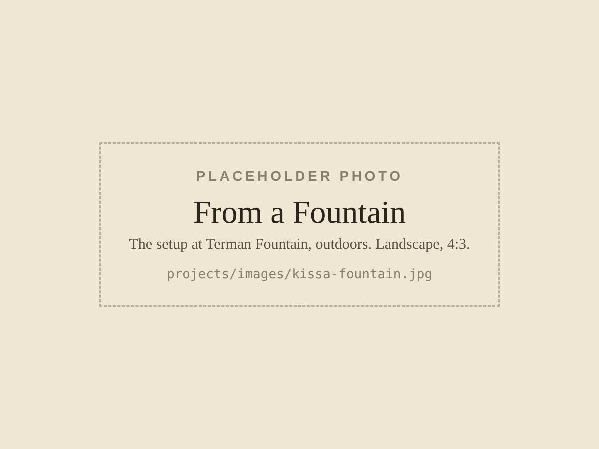
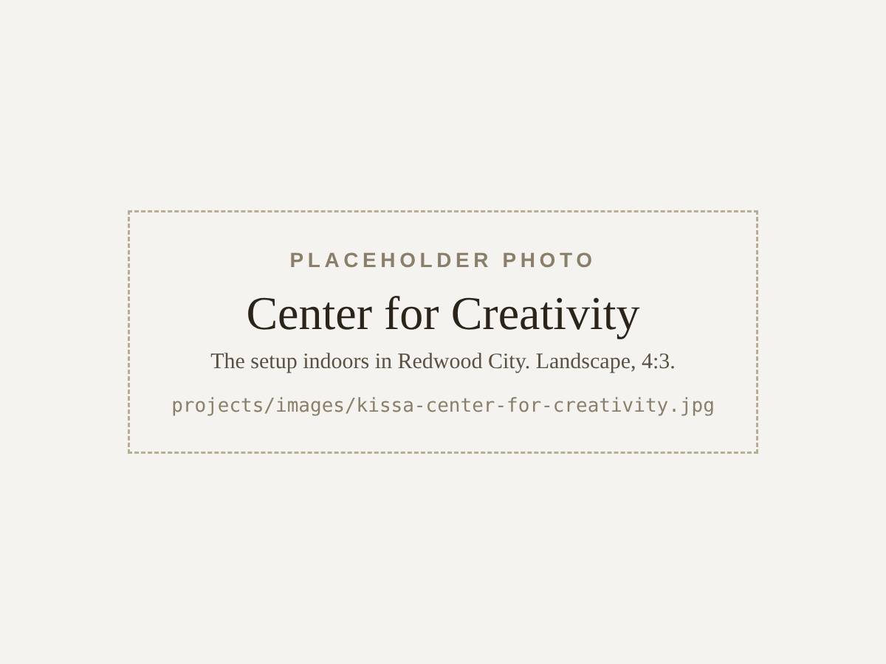
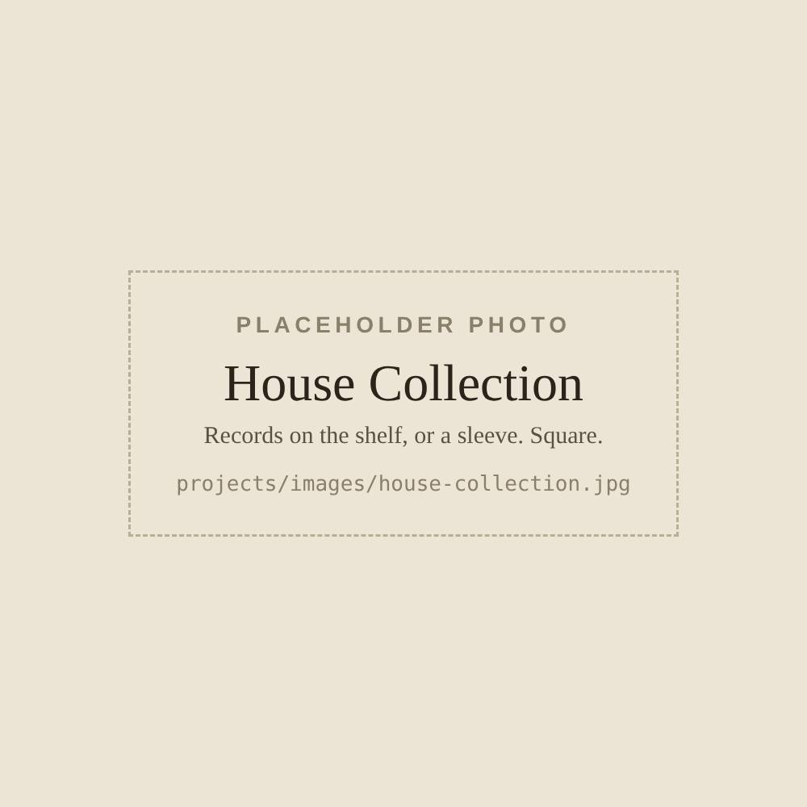
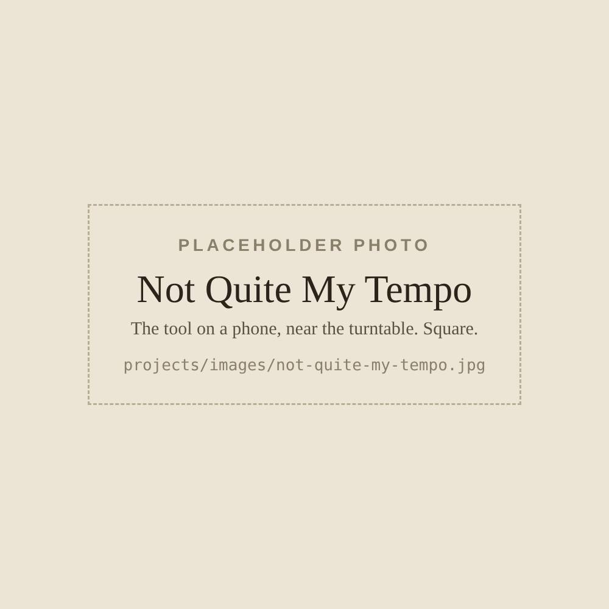
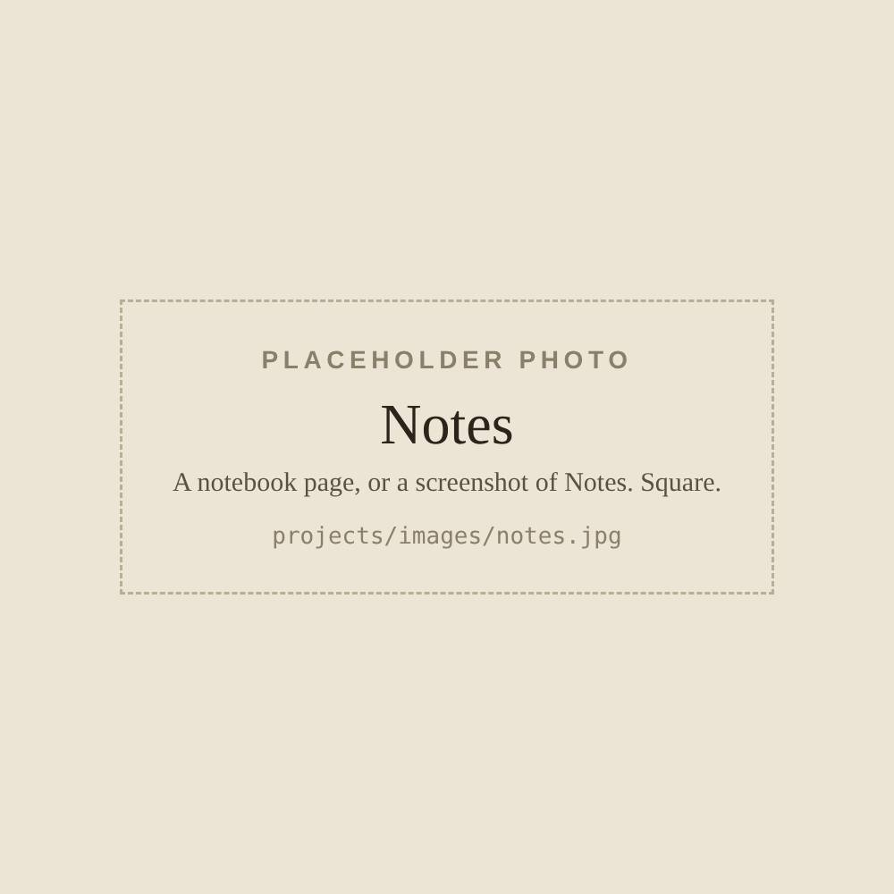

Outdoors · Terman Fountain, Stanford
From a Fountain
The first version. Records played live by the fountain for whoever happens by, with a stream for headphones and a letter book for what the songs bring back.
Things I build outside the lab, mostly around records and listening.
Listening installation
A portable turntable setup, inspired by the jazz kissa of Japan, that I install in different spaces to complement the visual space with an auditory one. Think live concerts, or visual art.
On air now · Listen

Outdoors · Terman Fountain, Stanford
The first version. Records played live by the fountain for whoever happens by, with a stream for headphones and a letter book for what the songs bring back.

Indoors · Redwood City
The same setup, adapted for a volunteer-run arts space in Redwood City. [TODO: one sentence on what changed indoors: the room, the sound, how visitors take part.]
Other things I’ve made.

Records
My record shelf, synced from Discogs. Follow a label through the years, pull a record at random, or look up the tempo of the tracks I play.

A tool
Hold your phone up to the music and it shows the tempo, the key with mixing hints, and the loudness. There’s a tuner for guitar and bass, too.

Writing
Research ideas in development, each with a record of how it changed, and an informal journal.